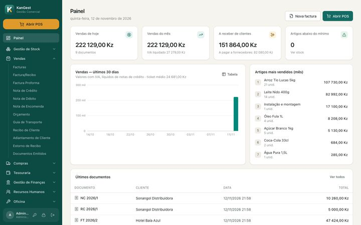
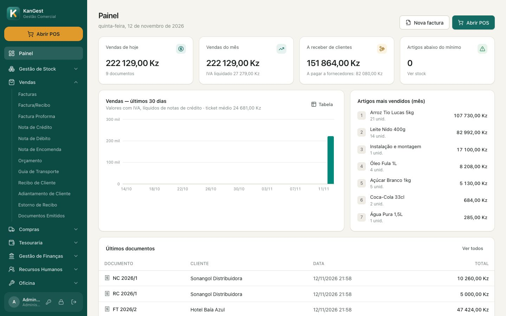
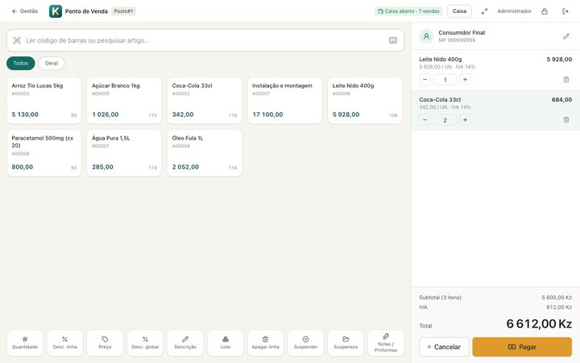
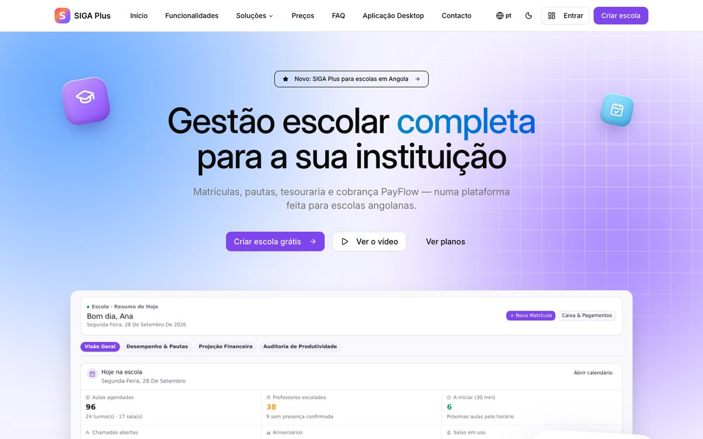
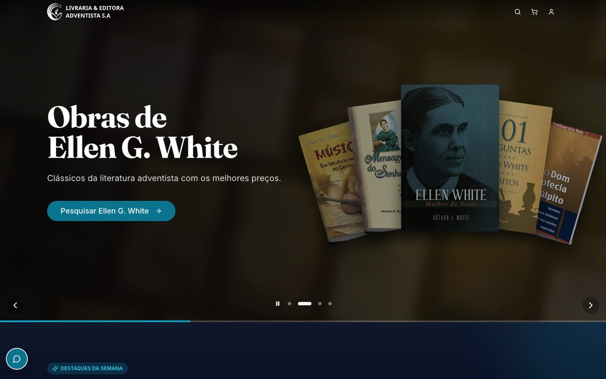

Software de gestão feito em Angola
Facture, venda e gira o seu negócio sem complicações.
O KanGest junta facturação, ponto de venda, stock e tesouraria num só programa para Windows e macOS. Funciona no seu computador, mesmo sem internet.
Documentos certificáveis pela AGT
SAF-T (AO)
Funciona sem internet
Windows e macOS



Produtos
Sistemas prontos, a funcionar hoje
Instale o KanGest no seu computador, entre no SIGA Plus pela internet ou veja a loja online que fizemos para um cliente.

Gestão escolar
Matrículas, turmas, pautas e boletins, secretaria, tesouraria e cobrança de propinas, com portais para estudantes e encarregados.
EscolasSecretariaPortais

Loja online · Livraria & Editora Adventista
Livraria Adventista
Loja online com catálogo, carrinho e pagamento, entregas em Angola, painel de gestão e acompanhamento das encomendas.
E-commerceEntregasPainel
Porquê o KanGest
Pensado para quem vende todos os dias
Funciona sem internet
Os dados ficam no seu computador. A internet só é precisa para a Facturação Electrónica e as actualizações.
Feito para Angola
IVA e motivos de isenção, documentos assinados, SAF-T (AO), IRT e INSS nos salários.
Do balcão ao escritório
O mesmo programa serve o caixa no POS e a gestão: stock, compras, tesouraria e relatórios.
Vem do KIGEST?
Trazemos artigos, clientes, stock, histórico e dívidas, com conferência no fim.
Impressão
Impressos como os que já conhece
Facturas em A4 e talões de 80 ou 58 mm com o mesmo desenho do KIGEST GC e POS: logótipo, dados do cliente, resumo de imposto, coordenadas bancárias e o código de certificação em cada documento.

Equipamento POS
Posto de venda pronto a facturar
Terminal táctil, impressora térmica, leitor de códigos, gaveta e visor de cliente, com o KanGest instalado e configurado.
- Talão com corte e logótipo
- Gaveta a abrir na venda
- Leitor a lançar artigos
- Visor com total e troco
Migração
Usa o KIGEST? Traga tudo consigo.
Artigos, clientes, stock, documentos, dívidas e tesouraria passam para o KanGest, e no fim confirmamos que bate tudo certo.
Gestão escolar completa
Para escolas angolanas, da iniciação ao ensino superior, acessível de qualquer computador ou telemóvel.
Projecto para cliente
Livraria Adventista
Loja online para leitores, famílias e igrejas comprarem literatura em Angola, do catálogo à entrega. Também fazemos sites, lojas e sistemas à medida.
Experimente o KanGest no seu computador
Instale, crie a empresa e comece a vender. Se precisar de ajuda com o equipamento ou com a migração, falamos consigo.